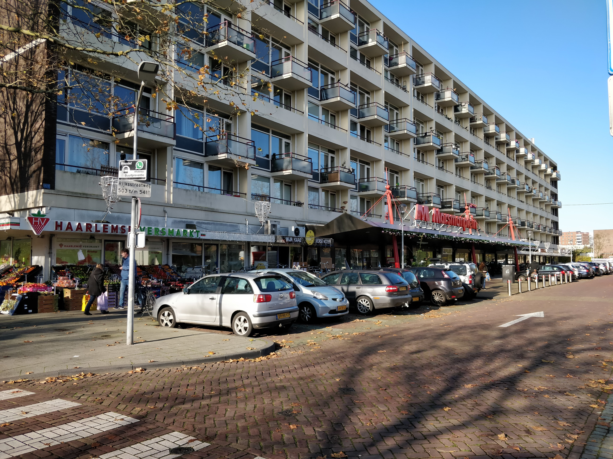
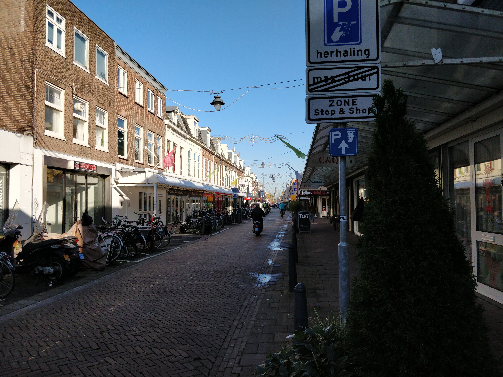

Haarlem-Noord, voorheen Schoten, is het deel van Haarlem boven het station van Haarlem tot aan het Spaarne Gasthuis locatie Noord. Westelijk ligt de Randweg en oostelijk de Vondelweg. Midden in ligt vanaf het Spaarne Gasthuis tot aan het station de Rijksstraatweg.
Haarlem-Noord bestaat vooral uit woningen. Gelegen naast de Randweg, die naar verschillende snelwegen leidt, is het een ideale plek voor mensen die binnen of buiten Haarlem werken. Het ligt dicht in de buurt, op fietsafstand, van het centrum waar je de trein kan pakken richting alle grote steden van Nederland. Naast het Spaarne Gasthuis ligt busstation Delftplein. Vanaf hier kun je meerdere bussen richting Haarlem pakken en naburige dorpen Santpoort-Noord, Velserbroek, Driehuis en IJmuiden.
In Haarlem-Noord zijn ook verschillende scholen. In bijna elke woonwijk staat wel minimaal één basisschool. Daarnaast zijn er ook twee middelbare scholen te vinden, namelijk het Mendelcollege, Paulus Mavo|VMBO en het Schoter. Ook is er een vestiging van het Nova College te vinden aan de Planetenlaan, waar verschillende mbo opleidingen worden gegeven.
Qua winkels is er genoeg te vinden in Haarlem-Noord. Naast de vele winkels langs de Rijksstraatweg zijn er twee grotere winkelgebieden, namelijk het Marsmanplein en de Cronjéstraat. Op het Marsmanplein is onder andere een Albert Heijn, Plus supermarkt en Kruidvat te vinden. Ook zijn er vele kleinere speciaalzaken, zoals een visboer en slijterij.

Aan de Cronjéstraat zijn juist meer kleding- en schoenenwinkels te vinden, zoals de Wibra, Zeeman en Intersport. Ook ligt er een filiaal van Blokker, Kruidvat, Bruna, Etos en Expert aan deze straat. Noordelijk van de Cronjéstraat ligt het Soendaplein, waar een groot filiaal van Albert Heijn aanwezig is.

Naast het Marsmanplein de Cronjéstraat zijn er enkele filialen van Dekamarkt te vinden in Haarlem-Noord, waarvan het filiaal aan de kruising van de Rijksstraatweg en Planetenlaan de grootste is.
Qua toeristische attracties is er weinig te vinden in Haarlem-Noord, maar gelukkig ligt Haarlem-Centrum naast de deur. Wel is er jaarlijks een kermis aan de Zaanenlaan en is er soms een honkbalwedstrijd van bijvoorbeeld het Nederlands Honkbalteam te zien bij het honkbalveld van de Pim Mulierlaan. Daarnaast ligt aan de Delftlaan Artisklas Haarlem, de kleinste dierentuin van Nederland.